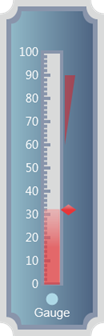

Step 1:
View:
Add the below code in your aspx file.
|
View[ASPX] <%@ Page Language="C#" MasterPageFile="~/Views/Shared/Site.Master" Inherits="System.Web.Mvc.ViewPage" %> <asp:Content ID="Content1" ContentPlaceHolderID="TitleContent" runat="server"> Linear Gauge </asp:Content>
<asp:Content ID="Content2" ContentPlaceHolderID="MainContent" runat="server"> <%--Rendering the linear gauge--%> <%=Html.Syncfusion().LinearGauge("Gauge") //Specifying the height and width for the linear gauge. .Height(420) .Width(130) //Setting the skins for the linear gauge. .GaugeSkins(GaugeSkins.VS2010) //Setting the orientation of the linear gauge. .Orientation(GaugeOrientation.Vertical) //Setting the frame type .FrameType(LinearGaugeFrameType.CroppedRectangle) //Adding the scale element in linear gauge. .Scales(scale => { scale.Add() //Setting maximum and minimum values for the scale. .Maximum(100) .Minimum(0) //Setting major and minor interval values for the scale. .MajorIntervalValue(10) .MinorIntervalValue(2) .ScaleBarSize(24) //Setting the scale direction. .ScaleDirection(ScaleDirection.CounterClockwise) .BorderWidth(4) //Setting the length of the scale. .ScaleBarLength(290) //Adding the tick elements in linear scale. .Ticks(Tick => { //Adding the major tick element by setting its Tickstyle property to MajorTick. Tick.Add() .Angle(180) .TickHeight(10) //Setting the position of the ticks. .TickPlacement(ScalePlacement.Outside) .DistanceFromScale(-24) //Setting the major tick shape. .TickShape(TickShape.Rectangle) .TickStyle(TickStyle.MajorTick) .TickWidth(4); //Adding the minor tick element by setting its Tickstyle property to MinorTick. Tick.Add() .Angle(180) .TickHeight(6) //Setting the position of the ticks. .TickPlacement(ScalePlacement.Outside) .DistanceFromScale(-24) //Setting the minor tick shape. .TickShape(TickShape.Rectangle) .TickStyle(TickStyle.MinorTick) .TickWidth(4); }) //Adding the pointer elements in linear scale. .Pointers(pointer => { //Adding the Bar pointer. pointer.AddBarPointer() .Value(32) .Opacity(0.7) //Setting the bar style. .BarStyle(BarStyle.Rectangle) .PointerWidth(18); //Adding the Marker. pointer.AddMarker() .Value(32) .PointerPlacement(ScalePlacement.Outside) //Setting the Marker style. .MarkerStyle(MarkerStyle.Diamond) .PointerWidth(12) .PointerLength(17); }) //Adding the range element. .Ranges(range => { range.Add() //Setting the position of the range. .RangePosition(ScalePlacement.Outside) //Setting the start value and end value for the range. .StartValue(60) .EndValue(90) .BackgroundBrush(Brushes.Red) .Opacity(0.4) .BorderWidth(0) //Setting Start width and end width. .EndWidth(13) .StartWidth(0); }) //Adding the labels for the Major ticks in linear scale by setting its TickStyle property to MajorTick .Labels(label => { label.Add() .DistanceFromScale(5) .FontSize(15) .TickPlacement(ScalePlacement.Inside) .TickStyle(TickStyle.MajorTick) .Angle(0); }); }) //Adding Custom labels for the linear gauge. .CustomLabel(custom_Label => { custom_Label.Add() //Setting the location of the label. .Location(new System.Windows.Point(50, 93)) .BackgroundBrush(Brushes.White) .FontSize(15) //Specifying the value for the custom label. .LabelValue("Gauge"); }) //Adding the Indicators. .StateIndicators(Indicator => { Indicator.Add() //Setting the height and width for the indicators. .IndicatorHeight(15) .IndicatorWidth(15) //Setting the Indicator style. .IndicatorStyle(IndicatorStyle.CircularLED) .BackgroundBrush(Brushes.LightBlue) //Setting the Indicator location. .Location(new System.Windows.Point(50, 89));
})
%> </asp:Content> |
|
View[cshtml] <div> @*--Rendering the linear gauge--*@ @{ Html.Syncfusion().LinearGauge("Gauge") //Specifying the height and width for the linear gauge. .Height(420) .Width(130) //Setting the skins for the linear gauge. .GaugeSkins(GaugeSkins.VS2010) //Setting the orientation of the linear gauge. .Orientation(GaugeOrientation.Vertical) //Setting the frame type .FrameType(LinearGaugeFrameType.CroppedRectangle) //Adding the scale element in linear gauge. .Scales(scale => { scale.Add() //Setting maximum and minimum values for the scale. .Maximum(100) .Minimum(0) //Setting major and minor interval values for the scale. .MajorIntervalValue(10) .MinorIntervalValue(2) .ScaleBarSize(24) //Setting the scale direction. .ScaleDirection(ScaleDirection.CounterClockwise) .BorderWidth(4) //Setting the length of the scale. .ScaleBarLength(290) //Adding the tick elements in linear scale. .Ticks(Tick => { //Adding the major tick element by setting its Tickstyle property to MajorTick. Tick.Add() .Angle(180) .TickHeight(10) //Setting the position of the ticks. .TickPlacement(ScalePlacement.Outside) .DistanceFromScale(-24) //Setting the major tick shape. .TickShape(TickShape.Rectangle) .TickStyle(TickStyle.MajorTick) .TickWidth(4); //Adding the minor tick element by setting its Tickstyle property to MinorTick. Tick.Add() .Angle(180) .TickHeight(6) //Setting the position of the ticks. .TickPlacement(ScalePlacement.Outside) .DistanceFromScale(-24) //Setting the minor tick shape. .TickShape(TickShape.Rectangle) .TickStyle(TickStyle.MinorTick) .TickWidth(4); }) //Adding the pointer elements in linear scale. .Pointers(pointer => { //Adding the Bar pointer. pointer.AddBarPointer() .Value(32) .Opacity(0.7) //Setting the bar style. .BarStyle(BarStyle.Rectangle) .PointerWidth(18); //Adding the Marker. pointer.AddMarker() .Value(32) .PointerPlacement(ScalePlacement.Outside) //Setting the Marker style. .MarkerStyle(MarkerStyle.Diamond) .PointerWidth(12) .PointerLength(17); }) //Adding the range element. .Ranges(range => { range.Add() //Setting the position of the range. .RangePosition(ScalePlacement.Outside) //Setting the start value and end value for the range. .StartValue(60) .EndValue(90) .BackgroundBrush(Brushes.Red) .Opacity(0.4) .BorderWidth(0) //Setting Start width and end width. .EndWidth(13) .StartWidth(0); }) //Adding the labels for the major ticks in linear scale by setting its TickStyle property to MajorTick .Labels(label => { label.Add() .DistanceFromScale(5) .FontSize(15) .TickPlacement(ScalePlacement.Inside) .TickStyle(TickStyle.MajorTick) .Angle(0); }); }) //Adding Custom labels for the linear gauge. .CustomLabel(custom_Label => { custom_Label.Add() //Setting the location of the label. .Location(new System.Windows.Point(50, 93)) .BackgroundBrush(Brushes.White) .FontSize(15) //Specifying the value for the custom label. .LabelValue("Gauge"); }) //Adding the Indicators. .StateIndicators(Indicator => { Indicator.Add() //Setting the height and width for the indicators. .IndicatorHeight(15) .IndicatorWidth(15) //Setting the Indicator style. .IndicatorStyle(IndicatorStyle.CircularLED) .BackgroundBrush(Brushes.LightBlue) //Setting the Indicator location. .Location(new System.Windows.Point(50, 89));
}).Render(); }
</asp:Content> |
Step 2:
Controller:
Add the below code in your controller.
|
using System; using System.Collections.Generic; using System.Linq; using System.Web; using System.Web.Mvc;
namespace LinearGauge.Controllers { [HandleError] public class HomeController : Controller { public ActionResult Index() {
return View(); } } } |
Step 3:
Run the code. You will get the below Output.

Figure 87: Linear Gauge